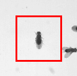
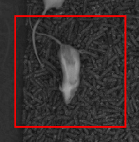
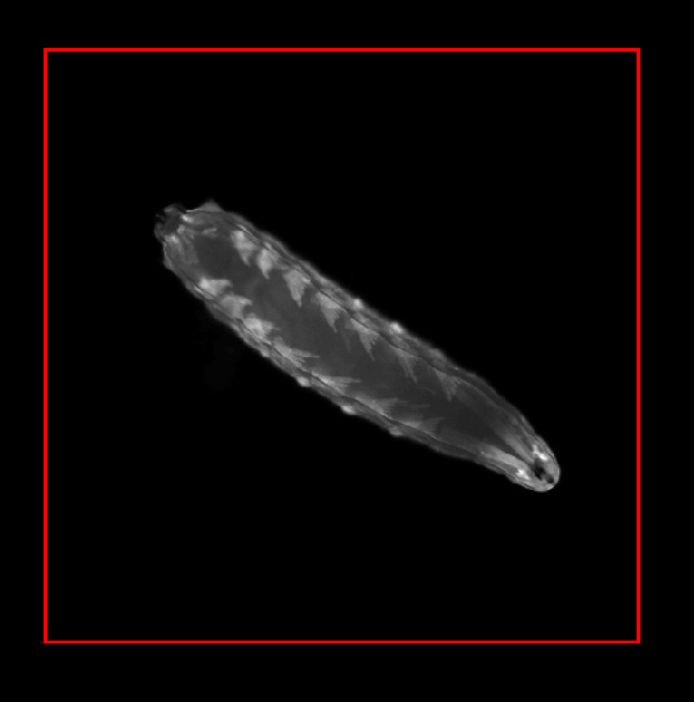

The Animal Part Tracker (APT) is machine learning software for automatically tracking the locations of body parts in input videos. For example, it has been used to track the tips of the legs of a fly or the ears of a mouse. To train a tracker, a user labels the locations of selected landmark points in selected frames and videos. Machine learning is then used to train a classifier which can automatically predict the locations of these parts in new frames and videos.
APT is modular software that has been engineered to work efficiently for a variety of applications. It has been used to track parts of flies, mice, and larvae. It can track parts in two dimensions from video from a single camera, or in three dimensions from video from multiple calibrated cameras. It can also be used to track the parts of multiple interacting animals. APT includes both an engineered labeling interface as well as machine learning algorithms for training trackers.
APT is developed by Allen Lee, Mayank Kabra, Alice Robie, Stephen Huston, Felipe Rodriguez, Roian Egnor, Austin Edwards, and Kristin Branson. All work is funded by the Howard Hughes Medical Institute and the Janelia Research Campus.
This program is free software: you can redistribute it and/or modify it under the terms of the GNU General Public License as published by the Free Software Foundation, either version 3 of the License, or (at your option) any later version. This program is distributed in the hope that it will be useful, but WITHOUT ANY WARRANTY; without even the implied warranty of MERCHANTABILITY or FITNESS FOR A PARTICULAR PURPOSE. See the GNU General Public License (version 3) for more details.
The git repository for APT is hosted on Github. This software is currently under heavy development, so we recommend using git to clone the repository and updating frequently. Note that we use git submodules so remember to use --recurse-submodules option.
APT works best with MATLAB version >= 2020a and the following MATLAB toolboxes:
At the present time (June 2025), we do not recommend using Matlab 2025a or later with APT. Matlab 2025a switched to a new GUI architecture, and this has caused various issues with APT that have not been fully addressed yet. We hope to offer full 2025a support in the near future.
A CUDA-enabled GPU is required to train a deep-learning based tracker. This GPU can be:
If you choose to use a local back end, your local machine must have an NVIDIA GPU with Compute Capability >= 3.0. The best GPUs for deep learning are constantly changing (some benchmark info is here). It is important for this GPU to have sufficient memory. All GPUs we have used have at least 12GB of RAM. In our lab, we have used the following GPUs:
The GPU back end is where and how GPU-based deep-learning computations are performed. Which back end to choose depends on your resources:
You can select which backend APT will use from the Track->GPU/Backend Configuration menu.
>> cd APT;
>> StartAPT;
APT uses machine learning to estimate the positions in each video frame of multiple specified animal parts. For example, a part could be the tip of the tarsus of the left front leg of a fly, or the base of a mouse's tail.
To train APT, you must label the locations of these parts in many sample images. The collection of video frames and corresponding manual labels is called the training data set.
APT's machine learning algorithm will then learn a classifier which can predict part locations from just the video frame. It chooses the parameters of the classifier so that it is as accurate as possible on the training data.
This learned classifier can then be used to track frames, animals, and videos that it wasn't trained on, producing trajectories -- the locations of each part for each animal over sequences of frames.
APT gives you a lot of freedom -- you must choose which parts to label and which frames, videos, and animals to include in your training data. You can also choose different machine learning algorithms, each of which include multiple hyperparameters that can affect their performance. Below, we outline some principles to consider to get APT to work well.
The first choice you must make is which parts you want to label. The first thing to consider is what you are going to do with the output trajectories, should tracking be successful. We try to think through the exact computations we will do with the output trajectories before deciding which parts to label.
The second thing to consider is how reliably you can manually label each part. That is, if you were to ask two people to label the part in the same image, how much inter-annotator disagreement will there be? As a rule of thumb, if it is hard for you to do the task, it will be also be hard for APT. We have found it easier to label parts that correspond to specific anatomical locations on the animal regardless of what angle you are viewing the animal from. For example, the tip of a mouse's left ear is a specific anatomical location, while the top of the mouse's head might be a more view-dependent feature.
It is also important to consider how easy it is to identify that specific anatomical location from images. For example, the left front shoulder joint of a mouse is a specific anatomical location, but it is quite difficult to localize visually through all the blobbiness of a mouse. It is also important to think about how easy it is to localize the part from the types of video you have recorded. For instance, it is perhaps hard to label the big toe of the front left foot of a mouse in video taken from above a mouse, since the foot is often occluded by the body of the mouse. It is best if you do not need to guess where the part is, but can reliably localize the part.
Using APT, you can choose to label whichever frames you like. Here, we describe some best practices for choosing frames to label.
Choose a diverse set of frames to label that are representative of all the types of videos you want your tracker to work on. If you want your tracker to work on many different animals, then you should label different animals, otherwise your tracker may overfit to specific characteristics of the one individual you labeled. Similarly, if you want your tracker to work in many different videos, then you should label frames in multiple videos, otherwise the tracker may overfit to specific characteristics of individual videos.
In general, you want to think about all the different ways you might want to use the tracker, and make sure that all of those are represented in your training data. APT makes it easy to add multiple videos to your APT Project and to navigate to different frames and different animals.
You should label frames in which the animal is in a variety of different poses. Labeling multiple really similar looking frames may not be very helpful. This is because each really similar frame does not provide much extra information beyond the original. A particular case of this are frames that are temporally near each other, e.g. frame 1 and frame 2 of a video, which will look very similar.
If you only have a few animals in your experiments, then it is feasible to include training examples from all of them, and we recommend doing this. Similarly, if you only have a few videos that you want your tracker to run on, then it is feasible to include training examples from all of them, and we recommend doing this. Otherwise, you will want your tracker to generalize to animals and/or videos you did not train on, so you should train on enough different animals/videos that APT can learn all the ways that animals/videos can differ from each other -- it must learn what properties of animals/videos it should ignore.
The number of frames you need to label depends on many things, including how hard the task is. We believe that the best way to tell if you have labeled enough frames is to train a tracker and then evaluate how well it is working.
To tell if your tracker is working, you need to test it on video sequences representative of those you want to use it on. It is important to devise a good set of test videos that represent how you plan on using your tracker. In particular, it is important that the test video sequences be as different from your training data as the videos you ultimately want to use the tracker on. The tracker will overfit to the training data, and will likely perform close to perfectly on frames in your training data set, and it will likely also overfit to examples very similar to your training examples. So, since temporally adjacent frames are very similar, your tracker will likely work better on frames temporally near training frames.
If you want to use your tracker on videos that you did not train it on, then it is important to test it on videos from which you haven't included any training data. Similarly, if you want it to work on animals that you did not train it on, then you should test it on animals you didn't train it on. If you are evaluating on animals and videos that you trained on, then you should select frames temporally far from training frames for evaluation.
APT makes it easy to train a tracker then predict on a sequence of frames. The first test of whether the tracker is working is the eye-ball test -- just look at the predictions and see if, by eye, they look accurate. If it is easy to find frames that the tracker is performing poorly on, then we recommend annotating these frames, adding them to the training set, and re-training.
Once APT has passed the eye-ball test, you can use cross-validation to estimate accuracy quantitatively. The gold standard for accuracy estimation is ground truthing, in which you manually annotate new frames, and quantitatively compare APT's predictions to manual labels.
Before you click the Train button, there are some parameters that are important to set. You can select the tracking algorithm from the Track->Tracking algorithm menu. You can select the backend on which all GPU computations will be performed from the Track->GPU/Backend Configuration menu. Parameters related to the currently selected algorithm can be set from the Tracking Parameters GUI, accessed from the Track -> Configure tracking parameters menu. For each new application, it is important that you set the Tracking Parameters labeled as Important. Information on tracking parameters is here.
APT can be used to track a wide variety of different configurations. The following important distinctions are made:
APT stores all information relevant to a given tracking problem in a project file with the extension .lbl. This includes:
From the File dropdown menu, select "New Project...". This will pop up a New Project dialog. Enter the following information:
Clicking "Copy Settings From..." allows you to copy the project settings from an existing .lbl file. Clicking the "Advanced" button shows more parameters you can set.
Once you have set all the parameters to define your project type, click "Create Project" to create the project. This will then open the Manage Movies. Click "Add Movie" and select the first movie to add. If you selected body tracking, you will also be prompted to select the body-tracking file associated with this movie. You may add additional movies at any time. The Manage Movies dialog box can be used to add more movies and also navigate between movies during labeling. Close or minimize the Manage Movies window.
We recommend saving your project now. Select "Save as..." from the File dropdown menu and save your project. This will save a .lbl file with your project in it.
To add, or switch which movie you are labeling, or remove a movie, select "Manage Movies" from the File menu.
The Manage Movies dialog has a row for each movie (or set of corresponding movies, for multi-view projects). This includes:
|
|
|
To add a movie, click "Add Movie".
|
|
|
|
To switch to labeling a different movie, select the movie in the main dialog, then click "Switch to Movie". Alternatively, you can double-click on the movie in the main dialog.
To remove a movie from the project, select the movie in the main dialog, then click "Remove Movie".
Select "Load Project" from the File dropdown menu and select the .lbl file to open. Because of their size, APT .lbl files do not store the video directly, but instead store a link to the file location. If you have moved the videos since you last saved the project, APT will complain and prompt you for its new location.
To save your project, from the File menu, select "Save Project" or "Save Project As..." to save to a new file location. We recommend saving often to not lose your work.
The Graphical User Interface (GUI) is divided into several sections. Hovering over different components will reveal tooltips.
GUI components:
For multi-target projects with body tracking, each individual animal in the frame (refered to as a target) can be labeled and tracked. You can switch which animal is in focus in the following ways.
You can zoom and pan in space using the magnifying glass and hand tools in the tool bar on the top left.
For projects with body tracking, there are several methods to keep the current animal in view.
From the View dropdown menu:
Using the Target zoom controls (for projects with body tracking in Center video on target mode:
One of the main goals of the APT user interface is allowing easy and efficient labeling of training data. To this end, we have implemented a few different labeling modes. You can select different labeling modes from the Label menu.
In sequential labeling mode, when you decide to label an animal and frame, you must click and label all points in sequential order. We recommend using this mode if you have memorized the part order (you can look at the reference frame for a reminder) and most of the parts are in quite variable locations. We use this mode for almost all of our projects.
To begin labeling an animal/frame, click on the location of part 1 in the labeling window. Then, sequentially click to label parts 2, 3, ... until you have labeled all parts.
You can edit placement of any landmark after you finish initially positioning all parts in the following ways:
You can remove labels from the current animal and frame by clicking the Clear button.
If you change frames in the middle of labeling a frame, the locations of the parts you have clicked so far will be lost. To see temporal context in the middle of labeling, you can click the Play context button.
To label that a part is occluded, hold down the shift key while clicking. Alternatively, you can select the point and type 'o'. Occluded points are indicated with an 'o' marker.
In template mode, all the parts are placed in a pre-specified location, and you select and move individual parts. This mode is useful if it is hard to remember the parts in order (e.g. if there are a lot of parts), or if many of the parts don't move much.
When you navigate to an unlabeled frame, all the parts will appear as white '+'es. As you modify them, they will be colored.
|
|
|
The initial locations of the parts in a given frame is based on the last labeled frame you have navigated to. If you have body tracking, then the template will translate and/or rotate with the body track. If no frames have been labeled yet, the initial part locations will be random.
You can modify the label of any part in the following ways:
Once you have finished labeling the animal and frame, click the red "Accept" button to let APT know that this frame is now completely labeled. You can also press the keyboard shortcut 's' or the space bar. The Accept button will change to green and read "Labeled". All parts will change to be colored '+'es.
You can remove labels from the current animal and frame by clicking the Clear button. The green "Labeled" button will change back to a red "Accept" button.
If you change frames in the middle of labeling a frame, the locations of the parts you have clicked so far will be lost. To see temporal context in the middle of labeling, you can click the Play context button.
To label that a part is occluded, hold down the shift key while clicking. Alternatively, you can select the point and type 'o'. Occluded points are indicated with an 'o' marker.
Multi-view projects require parts to be labeled in each view. There is an extra label frame for each additional view. Multiview labeling mode must be used for all multi-view projects.
Multi-view labeling mode is most similar to template labeling mode. When you navigate to an unlabeled frame, all the parts are placed in a pre-specified location in all views, and will appear as white '+'es. As you modify them, they will be colored. When a part is selected for modification, it is selected in all views simultaneously.
The initial locations of the parts in a given frame is based on the last labeled frame you have navigated to. If no frames have been labeled yet, the initial part locations will be random.
You can modify the label of any part in the following ways:
Once you have finished labeling the animal and frame, click the red "Accept" button to let APT know that this frame is now completely labeled. You can also press the keyboard shortcut 's' or the space bar. The Accept button will change to green and read "Labeled". All parts will change to be colored '+'es.
You can remove labels from the current animal and frame by clicking the Clear button. The green "Labeled" button will change back to a red "Accept" button.
If your cameras are calibrated, you can load this calibration information into APT by selecting Load calibration file from the Label menu. Calibration file types are detailed here. When a part is selected in one view by clicking on it, the calibration information is used to compute the epipolar line on which the part in other views should lie. This is shown in all other views.
If you change frames in the middle of labeling a frame, the locations of the parts you have clicked so far will be lost. To see temporal context in the middle of labeling, you can click the Play context button.
To label that a part is occluded, hold down the shift key while clicking. Alternatively, you can select the point and type 'o'. Occluded points are indicated with an 'o' marker.
The streamlined version of multiview labeling is very similar to standard multiview labeling mode, with a few features to reduce the number of clicks necessary. Streamlined mode can be selected by choosing "Streamlined" from the Label menu.
The main differences from standard multiview labeling are the following:
As described above, APT can use trajectories indicating the centroid and/or orientation of each animal in each frame to preprocess the videos. These trajectories are computed using other tracking software, and are stored in MAT files, one for each video.
APT expects body tracking data in the trx file format which is a MATLAB .mat file containing a variable trx. trx is an array of structs with an element for each animal (i.e., length(trx) is the number of animals/trajectories in the video). The struct for each trajectory i, trx(i), has the following fields:
x: x-coordinate of the animal in pixels (1 x nframes). Thus, trx(i).x(t) is the x-position of animal i in frame t of the animal's trajectory (which corresponds to video frame trx(i).firstframe + t - 1).y: y-coordinate of the animal in pixels (1 x nframes).theta: Orientation of the animal (head) in radians (1 x nframes).a: 1/4 of the major-axis length in pixels (1 x nframes).b: 1/4 of the minor-axis length in pixels (1 x nframes).nframes: Number of frames in the trajectory of the current animal (scalar).firstframe: First frame of the animal's trajectory (scalar).endframe: Last frame of the animal's trajectory (scalar).off: Offset for computing index into x, y, etc. Always equal to 1 - firstframe (scalar).
If your tracker does not track the orientation (theta), the major-axis length (a) or the minor axis length (b), set these values to NaN.
Below is the trx struct for a movie with 1500 frames and two animals. The first trajectory has data for the entire movie. The second trajectory is tracked for the second half of the movie (frames 750:1500).
trx(1) =
x: [1×1500 double]
y: [1×1500 double]
a: [1×1500 double]
b: [1×1500 double]
theta: [1×1500 double]
firstframe: 1
endframe: 1500
nframes: 1500
off: 0
trx(2) =
x: [1×751 double]
y: [1×751 double]
a: [1×751 double]
b: [1×751 double]
theta: [1×751 double]
firstframe: 750
endframe: 1500
nframes: 751
off: -749
APT uses body tracking information to crop and/or rotate the image around the tracked animals and improve tracking performance. For each body trajectory in each frame, APT crops a square centered at the body tracking centroid (trx(i).x(t),trx(i).y(t) above). The width of this square is defined as twice the ImageProcessing:Body Tracking:Target ROI:Radius parameter. The square can also be rotated according to be aligned with the animal's body orientation (trx(i).theta(t) above). This is particularly important when recording video from overhead, as we want APT to track in the same way regardless of which direction the animal is facing. To rotate the crop based on orientation, select the parameter ImageProcessing:Body Tracking:Target ROI:Align using trajectory theta.
|
|
|
not rotated to align with body axis |
These transformations can improve tracking in a few ways:
If a project is set up to have N > 1 views, then videos are added to the project as sets of N.
Frames in these videos should be synchronized -- e.g. frame 123 in video 1 should have been recorded at the same time as frame 123 in video 2. Ideally, all videos should have the same number of frames. If this is not the case for some reason, APT will use the length of the shortest video.
Camera calibration information can be used to help during manual labeling. It is also used when tracking to reconstruct the 3-d part positions from corresponding 2-d predicted part positions in each view.
We currently support 3 types of calibration files. They are all for pairs of cameras with correspondences defined using images of a checkerboard pattern.
APT includes implementations of several tracking algorithms that you can select from the Track->Tracking algorithm menu. A quantitative comparison of the performance of these algorithms on a variety of data sets is below. Higher numbers are better. These are preliminary results, and these numbers will be updated soon.
| Algorithm | Citation | GPU memory | Description |
| Cascaded Pose Regression (CPR) | Dollar, Welinder, Perona, 2010 | None | CPR is not a deep learning algorithm, but is instead based on a type regressor called random ferns (related to random forests). From an initial guess of the pose, it iteratively refines its estimate based on features computed in a reference frame determined based on the original pose. We recommend using this algorithm if you do not have access to a GPU. |
| Deep Convolutional Network - MDN | Our method | High | MDN, which stands for Mixture Density Network, is a deep convolutional net whose architecture combines a U-Net, a Residual network, and a Mixture Density Network. We and our collaborators use this network architecture in our experiments, and it achieves the highest accuracy in most of our experiments. |
| Deep Convolutional Network - DeepLabCut | Link | Medium | |
| Deep Convolutional Network - Unet | Ronneberger, Fischer, Brox, 2015 | Highest | |
| Deep Convolutional Network - OpenPose | Link | Medium | |
| Deep Convolutional Network - LEAP | Link | Low |
APT's performance depends critically on setting several tracking parameters well. Several of these parameters must be changed with each new tracking application. To access the tracking parameters, select "Configure tracking parameters..." from the Tracking menu.
We have divided parameters into the following categories:
Next, we describe our process for setting parameters for a new project. We also provide a table with values chosen for a variety of applications.
For Body tracking projects, cropping parameters are accessed within the "Tracking parameters" GUI:
For projects without body tracking, cropping can be modified by selecting "Edit cropping" from the File menu. Here, you can set a single, static crop box for each movie.

APT can be trained that tracking should be invariant to certain kinds of perturbations through data augmentation. Here, each training example is randomly perturbed every time it is seen during training. This effectively increases the size of your training set, and allows trackers to be trained from smaller amounts of manual annotation.
|
|
|
|
|
|
|
|
|
|
A variety of different types of perturbations are available. You should set the data augmentation parameters so that the perturbations reflect variation you expect to see in videos you want to run your tracker on. For example, if some of your videos are darker than others, you should set the "Brightness range" parameter so that it can transform images from a bright video to look like images in a dark video. APT's data augmentation module performs the following types of perturbations:
To train a deep neural network, it must fit within your GPU's memory. The amount of memory necessary is proportional to the product of the area of the input image in pixels times the neural network's batch size: Memory ∝ Area·BatchSize.
Next, set the "Downsample factor" and "Training batch size" parameters so that the network will fit into memory.
|
|
 |
The area of the input image is computed as follows.
The Training batch size is the number of images the neural network processes at a time during training. Memory requirements increase linearly with the batch size. Neural network performance can degrade with either too large or too small batch sizes. We recommend batch sizes in the range of 2 to 8 images. An estimate of the memory required for the current and other batch sizes is shown in the Parameter visualization window when you select Training batch size in the Tracking Parameters GUI.
Switch the Tracking parameters GUI to show "Beginner" parameters. Set "N. iterations of training" in the Tracking parameters GUI. This is the number of the tracker is trained for, and training time increases linearly with number of iterations. Longer training generally works better, but takes longer and has diminishing returns. During training, you can examine whether training has converged, and decide to stop training at any time.
If you selected "Flip horizontally" or "Flip vertically" above, it is important that you specify corresponding pairs of landmarks after this flip occurs. For example, after flipping both the image and the manual annotations, the left rear foot should be where the right rear foot is, and vice-versa. To do this, select "Select landmark flip pairings" from the Track menu.
Below, we list parameters we have used in our tracking projects.
| Parameter | 10 flies | Single fly head | Single fly | 2 mice | Single mouse | Single larva |
|---|---|---|---|---|---|---|
| Target ROI: Radius |  90 | N/A | N/A |  350 | N/A |  520 |
| Tracking Algorithm | MDN | MDN | MDN | MDN | DeepLabCut | MDN |
| Target ROI: Align using trajectory theta | Yes | N/A | N/A | No | N/A | No |
| Image Processing: Downsample factor | 1 | 1 | 2 | 1 | 1 | 2 |
| Gradient Descent: Training batch size | 8 | 4 | 2 | 8 | 8 | 4 |
| Data Augmentation: Rotate range | 10 | 20 | 10 | 180 | 10 | 180 |
| Data Augmentation: Translation range | 5 | 20 | 20 | 20 | 20 | 30 |
| Data Augmentation: Scale factor range | 1.2 | 1.2 | 1.2 | 1.2 | 1.2 | 1.2 |
| Data Augmentation: Contrast range | 0.09 | 0.2 | 0.1 | 0.1 | 0.1 | 0.1 |
| Data Augmentation: Brightness range | 0.09 | 0.2 | 0.1 | 0.1 | 0.1 | 0.1 |
| Data Augmentation: Flip horizontally | Yes | No | No | Yes | No | Yes |
| Data Augmentation: Flip vertically | No | No | No | No | No | No |
| Image Processing: Histogram equalization | No | No | No | No | No | Yes |
| Image Processing: Brightness normalization | No | No | No | No | No | No |
| Gradient Descent: N. iterations of training | 60000 | 60000 | 60000 | 60000 | 60000 | 60000 |
| MDN: Ignore occluded landmarks | No | No | No | No | No | No |
| MDN: Predict occluded | No | No | No | Yes | No | No |
| Target ROI: Pad background | 0 | N/A | N/A | 0 | N/A | 0 |
| Saving: Training tracker save interval | 1000 | 1000 | 1000 | 1000 | 1000 | 1000 |
| Image Processing: Neighborhood size for histogram equalization | 20 | 20 | 20 | 20 | 20 | 20 |
| Image Processing: Max pixel value | 255 | 255 | 255 | 255 | 255 | 255 |
| Gradient Descent: N. warm restarts | 2 | 2 | 2 | 2 | 2 | 2 |
| Gradient Descent: Learning rate decay iterations | 20000 | 20000 | 20000 | 20000 | 20000 | 20000 |
| Gradient Descent: Learning rate decay (gamma) | 0.1 | 0.1 | 0.1 | 0.1 | 0.1 | 0.1 |
| Gradient Descent: Number of test examples | 24 | 24 | 24 | 24 | 24 | 24 |
| Data Augmentation: Perturb color | No | No | No | No | No | No |
| Data Augmentation: Check landmarks during augmentation | Yes | Yes | Yes | Yes | Yes | Yes |
| Loss Function: Label uncertainty radius | 3 | 3 | 3 | 3 | 3 | 3 |
Once you have:
|
|
|
You can watch training progress in the Training Monitor window.
The top plot shows the Training loss being minimized as a function of number of training iterations on the current training batch. This should generally be decreasing with more iterations of training, but may occasionally waiver, as this is the training loss on only a sample of the training data (the current batch), and because we are using stochastic gradient descent for optimization. If training loss is not decreasing, then something is likely going wrong. If it seems to have plateaued, this could be a sign that training has converged and the tracker will not improve with more iterations of training.
The second plot shows the average Euclidean distance between the current landmark predictions and the manual labels. Again, this should generally trend down with more iterations of training.
The green text shows information about the training status, including whether training is running, how many iterations of training have been complete, and when the monitor was last updated.
The text window shows information about the training jobs that depends on the item selected from the pop-up menu at the bottom:
The Stop training can be pushed at any time to stop training. Stopping training requires a sequence of events to happen which could take a few seconds, so please be patient and only press this button once.
Trackers are saved at fixed intervals of iterations (by default 1,000 iterations, see tracking parameter Training tracker save interval). The most recent tracker can be used any time to track frames by clicking the Track button. This allows you to preview the tracker's performance without waiting for training to finish. This in-progress tracker will likely not work as well as the tracker when training is complete, but it can give you a sense of how well the tracker will work and which types of examples are currently difficult for the tracker and should be added to the training data set.
Once a tracker has been trained (or training is in progress), click the Track button on the bottom left to use the tracker.
The Frames to track pop-up menu specifies which frames will be tracked.
|
|
|
You can monitor progress in the Tracking Monitor.
The top, blue text shows information about which tracker is being used for tracking.
The colored bar(s) show the number of frames that have been tracked for each movie being tracked.
The green text shows information about tracking progress.
The text window shows information about the tracking jobs that depends on the item selected from the pop-up menu at the bottom:
At any time, you can push the Stop tracking button to stop tracking. Stopping tracking requires a sequence of events to happen which could take a few seconds, so please be patient and only press this button once. No intermediate results will be available if tracking is stopped prematurely.
Exporting manual labels to a .trk file:
Select File -> Import/Export -> Export Labels to Trk Files The first time you do this it will save to the same directory as your movie files, with a filename of [movie file name]_[labeler project name]_labels.trk. If you go to export again, it will prompt for overwriting, adding datetime or canceling the export. Note that the _labels part of the filename distinguishes between a trk file of manual labels and a trk file of automatically generated labels.Structure of the aptXVresults variable: it is a [number of labeled targets] x 9 cell array, with the following columns:
Create a project, add movies, label frames, and train a tracker iteratively as you normally would in APT.
Select Evaluate>Ground-Truthing Mode. An orange "GT Mode" indicator should appear in the main UI, and the Manage Movies window should appear.
Manage Movies is now tabbed, with the "GT Movie List" tab selected. The project now contains two sets of movies: i) "regular" movies used for training and parameter refinement, and ii) "GT" movies for testing tracker performance. Add test movies to the GT movie list. If possible, it is best to use movies that are not also in the regular movie list, ie that the project has never seen before. When the movie list is complete, press the "GT Frames" button to bring up the Ground-Truthing window. The project can be saved at any time during this process. (If you close GT window it can be re-opened from movie manager GUI).
In the Ground-Truthing window, press the Suggest button to generate a new/fresh list of frames to label. At the moment, frames are sampled randomly from the available GT movies, with all frames equally weighted. Other options are available at the command-line (see below). Click on a row in the table to navigate to a frame, or use the "Next Unlabeled" button. The APT main axes should become highlighted, indicating that the current frame/target is a GT frame. Label this frame. These labels will be used as GT labels against which the tracker will be compared.
When all GT frames are labeled, press "Compute GT Performance". APT will track the GT frames using the trained tracker, and compare the results to the manual GT labels. Along with various plots, the Labeler property .gtTblRes provides a results table for each GT row: manual labels, tracked positions, and L2 error.
Save the project to preserve your GT movie list, the list of GT frames with their labels, and the GT results.
docker: Got permission denied while trying to connect to the Docker daemon socket at unix:///var/run/docker.sock: Post http://%2Fvar%2Frun%2Fdocker.sock/v1.35/containers/create: dial unix /var/run/docker.sock: connect: permission denied.See 'docker run --help'.
/var/run/docker.sock:
$ ls -hl /var/run/docker.sockThe output will look like:
srw-rw---- 1 root root 0 Feb 27 17:21 /var/run/docker.sock=
/var/run/docker.sock to yourself:
$ sudo chown bransonk /var/run/docker.sock
$ sudo dockerd &
{kind=link}
{kind=link}
{kind=link}
{kind=link}
{kind=link}
{kind=link}
{kind=link}
{kind=link}
{kind=link}
{kind=link}
{kind=link}
{kind=link}
{kind=link}
{kind=link}
{kind=link}
{kind=link}
{kind=link}
{kind=link}
{kind=link}
{kind=link}
{kind=link}
{kind=link}
{kind=link}
{kind=link}
{kind=link}
{kind=link}
{kind=link}
{kind=link}